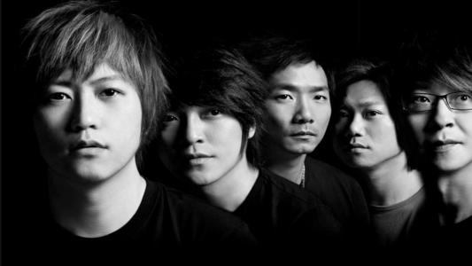
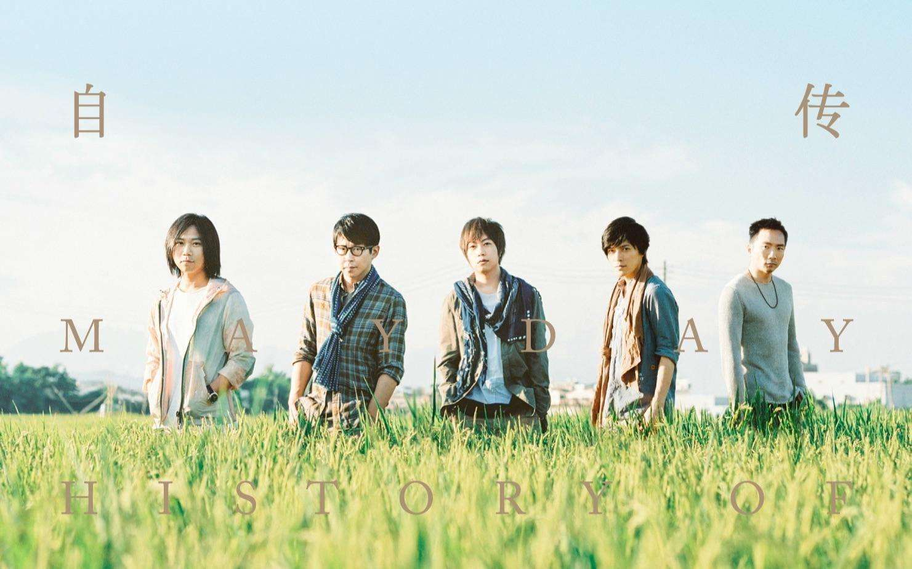

五月天
五月天（英文：MayDay)是于1999年出道的台湾乐团，由主唱阿信、团长暨吉他手怪兽、
吉他手石头、贝斯手玛莎和鼓手冠佑共五人组成；除冠佑外，其余四人皆毕业自台北市
国立师大附中。乐团前身为“SoBand”乐团，于1997年3月29日改为现名。
重要事件
- 1997－1999年（五月天正式出道年）：地下到主流
- 1999－2001年：《爱情万岁》与《人生海海》
- 2001－2005年：退伍复出后到《知足》
- 2006－2007年：《为爱而生》与“离开地球表面”演唱会
- 2008年：《后青春期的诗》与“十万人出头天”演唱会
- 2009－2010年：第三座“最佳乐团奖”与“D.N.A”演唱会
- 2011年：《第二人生》与电影“追梦3DNA”
- 2012年：六座金曲奖与专辑十白金殊荣、首登北京鸟巢
- 2013年：电影“诺亚方舟”到《步步》
- 2014年：麦迪逊广场花园开唱
- 2017－2018年：“人生无限公司”巡回 与 成军20周年
- 2019年：电影“人生无限公司3D”与“蓝色三部曲”20周年
成就和荣誉
- 2000年，五月天第一张创作专辑获最佳演唱团体奖
- 20001-2005年，五月天获得最佳乐团奖
- 2009年，我心中尚未崩坏的地方、如烟。最佳作词人奖
- 2012年，第二人生，诺亚方舟，最佳年度歌曲奖
- 2013年，陈奕仁／干杯，最佳音乐录影带奖
- 2014年，入阵曲，最佳年度歌曲奖
- 2017年，自传，成名在望，顽固，演唱类最佳国语专辑奖以及最佳乐团奖
主要作品
| 年份 | 专辑名 |
| 1999年 |
第一张创作专辑 |
| 2000年 |
爱情万岁 |
| 2001年 |
人生海海 |
| 2003年 |
时光机 |
| 2004年 |
神的孩子都在跳舞 |
| 2006年 |
为爱而生 |
| 2008年 |
后青春的诗 |
| 2011年 |
第二人生 |
| 2016年 |
自传 |
乐队照片


乐队历程
五月天自1999年7月7日正式出道，现已发行了9张录音室专辑、4张精选辑（其中2张分别为在中国大陆与日本出道发行）和数张演唱会专辑，
销售数量俱佳，在各地举办无数巡回演唱会，屡屡创下地方演唱会纪录与商机。出道后共计八次入围、其中四次夺下金曲奖“最佳乐团奖”。